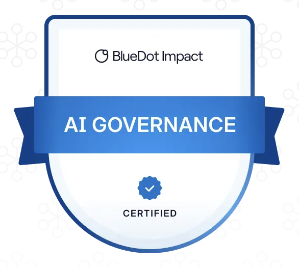

Where twenty years of building operational infrastructure is headed next.
Positioning: Operations Experience → AI Safety & Biosecurity
I come to AI safety and biosecurity as an operator, not a researcher. As such, my value is building programs, process, infrastructure, and institutional systems. In biosecurity, the defenses that work against the next airborne pandemic already exist: filtration, ventilation standards like ASHRAE 241, and far-UVC. What's missing is the execution to deploy them, the evidence that they work in real occupied spaces, and the public will to pay for them. That bottleneck is operational, not scientific, and it's where I can contribute most. AI raises the stakes on both fronts. It widens the gap between capability and our ability to measure it, concentrates advanced development inside a small number of labs, and lowers the barrier to engineered pathogens faster than our defenses are spreading. Twenty years running large diverse teams, managing hiring pipelines, building and navigating federated ecosystems, carrying regulatory responsibility for occupied buildings, and producing public facing content at scale gives me concrete, non-metaphorical experience relevant to each.
Deploying physical systems in regulated spaces
Carrying regulatory responsibility for occupied structures. As co-founder and COO of Cassette Systems, I personally hold the California HCD dealer-of-record license, which makes me accountable for compliance on homes people actually live in. Built-environment biosecurity runs on the same mechanics: codes, inspections, procurement, installation, and verifying that a system performs once people are inside. I know how to move a physical system from spec to occupied space without cutting corners.
Turning a plan into a deployment. At Cassette I take homes from design through sourcing, permitting, and installation, delivered through vendor partners rather than in-house crews. Clean indoor air needs exactly that: a credible plan, partners who own the space, and someone accountable for delivery. My LA28 clean-air project applies the same approach at event scale.
Managing diverse, cross-disciplinary teams
Evaluating work you don't personally practice. At Yahoo Studios I managed producers, engineers, and creative talent under one P&L, and had to judge whether a technical pipeline was worth the investment, or a creative deliverable met the quality bar without being the practitioner myself. AI safety and biosecurity work constantly require the same judgment: sitting between researchers and non-technical stakeholders, internalizing and translating between them, and making a defensible call without deferring blindly to either side.
Operating inside federated structures. RYOT ran with its own culture and mission inside Verizon Media's much larger infrastructure, with no monoculture imposed in either direction. Safety, governance, and biosecurity organizations sit in a structurally similar position, whether they are semi-autonomous inside labs, discrete organizations pursuing a niche goal, coalitions of health departments and community partners, or funders investing in multi-stakeholder efforts. I have a specific, lived answer to how you run something with real autonomy inside a bigger governing structure. As individual enterprises take shape, consolidate, and build steam, it is critical to architect operations to maintain the autonomy of their ideas without compromising their ability to collaborate and co-exist.
Business analysis & process development
Building measurement into fast-moving systems. The fixed/variable cost model I designed at Yahoo (lean central core, variable costs billed to business units) came from a need to accurately measure and allocate resources across output that was scaling faster than our ability to track it. That is the same operating discipline the field needs applied to model capability itself: making a fast-moving, under-measured system legible before it outruns oversight. Biosecurity has the same gap in a different form. Interventions that work in the lab have little measured evidence from real occupied spaces, and generating that evidence is an operations problem as much as a research one.
Building infrastructure for research-first organizations. I took RYOT, a brilliant but disorganized organization, and built the contracting, reporting, budgeting, and process structure that let it survive inside a much larger enterprise, saving $10M annually while positioning it for future sustainable growth. Safety and biosecurity orgs are frequently mission-driven and research-first but operationally underbuilt. My role is building the operating infrastructure (recruiting, financial, reporting, project management, communications) so the mission-critical work doesn't have to compete against operational fires.
Media & production experience
Making complex material legible to a general audience. My career has been producing editorial, branded, and live content for public consumption at scale. I know what makes a complicated topic land with a non-expert audience and what a creator or journalist actually needs to cover something accurately. That is directly relevant to closing the public understanding gap in AI governance and biosecurity, whether through creator engagement, field-building, or public campaigns like Biosecurity Reality Check.
Framing risk so it survives polarization. Post-COVID, pandemic defense is tangled up with masks and mandates, and anything that sounds partisan loses half the room before it starts. Clean air in schools and keeping kids in class is a different conversation, one that people across political lines can say yes to. Finding and testing that framing, without overclaiming the science or giving away anything hazardous about AI and biology, is media work as much as policy work.
Operating under time-boxed, irreversible pressure. Live production means real-time decisions with no undo, made alongside technical people I don't fully control. Pre-deployment evaluation, incident response, and outbreak response share that shape: bounded time, real technical uncertainty, consequences that can't be walked back. This ability cannot be taught, but can only be learned through actual trial by fire experience.
What I'm focused on: biosecurity
Undeployed defenses
Proven clean-air tools that rarely get installed.
The evidence gap
Little real-world data from occupied spaces.
Polarized readiness
Pandemic defense stuck in the culture war.
AI-bio convergence
AI lowering the barrier to engineered pathogens.
What I'm focused on: AI safety
The understanding deficit
Public grasp of AI governance lags the stakes.
The opacity gap
Capability outpacing safety measurement.
Concentration of power
Among a handful of private developers.
Cognitive enfeeblement
What reliance on AI does to human judgment.
Coursework

The governance landscape
Mapping the AI Governance Ecosystem
How policy, oversight, and power intersect across labs, safety researchers, evaluators, capital, and watchdogs.
Writing on this
Why Frodo needed a publicist
Substack — August 2026
PublishedClaude is AI and can make mistakes. Please double-check responses.
Substack — June 2026
PublishedRecursive Enshittification
Substack — June 2026
PublishedWhat AI Governance Needs to Survive the Intelligence Explosion
PublishedPitching into the vacuum of space.
Substack — August 2026
Single Origin vs Blended